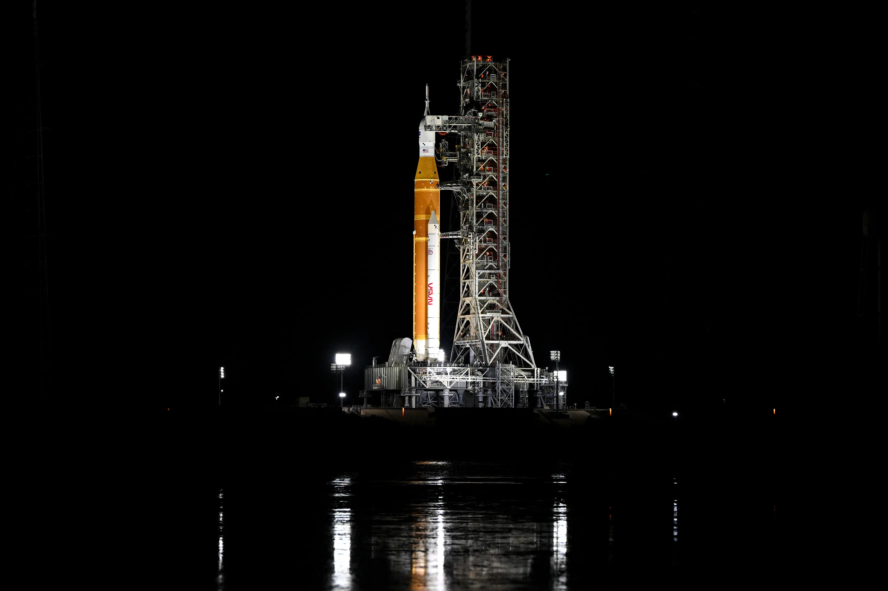

A critical test of NASA's towering Space Launch System rocket is begun, marking one of the final milestones before the vehicle carries four humans into deep space for the first time since the Apollo mission ended more than 50 years ago. The mission could launch as early as February 8.
The hands-on test, known as a "wet dress rehearsal," includes filling the rocket's tanks with almost 700,000 gallons of super-chilled propellants. Despite the leaks, NASA was able to fully fuel the SLS rocket on Monday. As of 6 p.m. ET, the space agency said that the vehicle had entered "replenish mode," in which the rocket is only loaded with enough fuel to fill the tanks while minor amounts of propellants boil off.
NASA reports that the agency is now preparing for the " terminal countdown sequence, which includes simulated launch operations and final readiness verifications."
Just before 10 p.m. ET, NASA revealed another problem. A "closeout team" discovered a problem with a valve that was "inadvertently vented." NASA stated that the group still required at least one more hour to complete their work.
Overall, the rehearsal is scheduled to comprise a run-through of the countdown on launch day, with the exception that during the test run, the clock will be stopped with less than a minute remaining.
Why This News Matters:
The "wet dress rehearsal" for NASA's Space Launch System (SLS) rocket is a big step forward for the agency's ambitious Artemis program, which wants to send people back to the moon. There were some problems with the test, like fuel leaks, but the rocket was successfully fueled and ready. This means that NASA is one step closer to launching the Artemis II mission. Since the Apollo missions, this will be the first time people have gone to the moon. If all goes well, the SLS will take four astronauts on a historic trip past the moon. This test will show if NASA can stick to its launch schedule, which could start as early as February 8.
Challenges and Delays in the Wet Dress Rehearsal
NASA encountered aggravating fuel leaks during a make-or-break test of its new moon rocket on Monday, raising concerns about how soon astronauts could embark on a mission around the moon. The leaks, reminiscent of the rocket's delayed debut three years ago, occurred just a few hours into the daylong fueling procedure at Kennedy Space Center.

At lunchtime, launch controllers began loading the 322-foot (98-meter) rocket with super-cold hydrogen and oxygen. Over 700,000 gallons (2.6 million liters) had to flow into the tanks and stay on board for several hours, simulating the last moments of a real countdown.
However, an overabundance of hydrogen quickly accumulated near the bottom of the rocket. Hydrogen loading was halted at least twice as the launch team worked to solve the problem using procedures learned during the previous Space Launch System countdown in 2022.
NASA stated that operations were suspended twice due to "leak rates at the interface of the tail service mast umbilical exceeding allowable limits."" The gasoline loading has now resumed.
NASA stated, "Engineers will attempt to complete the filling and then begin topping off the tank. If it is successful, they will try to keep the hydrogen concentration below safe limits during the core stage hydrogen loading."Artemis II Mission: Crew and Launch Timing
The outcome of this test will provide clues as to when NASA will be able to launch the Artemis II mission, which might occur during one of several launch windows between early February to late April. NASA's Christina Koch, Victor Glover, and Reid Wiseman, together with the Canadian Space Agency's Jeremy Hansen, are slated to board the SLS rocket before their Orion capsule separates and begins its trek around the moon.
On January 23, NASA stated that the crew had entered quarantine in Houston in preparation for their journey. Astronauts are frequently quarantined prior to liftoff to prevent disease. The crew is anticipated to arrive at their Florida launch location, Kennedy Space Center, after the wet dress rehearsal. Though the astronauts will not land on the moon for this mission, their journey will take them farther into the solar system than any humans have ever journeyed, breaking the record set by the Apollo 13 astronauts in 1970.
The roughly 10-day voyage will take the astronauts past the moon, around its enigmatic far side, and back to Earth, with the purpose of testing the capsule's life support and other critical systems. The crew will not enter lunar orbit or attempt a landing. Commander Reid Wiseman and his crew will become the first persons to launch to the moon since 1972.
NASA's Artemis Program: Preparations and Lessons Learned
NASA plans to conduct a clean wet dress rehearsal for the SLS rocket prior to liftoff. The rocket's maiden flight, the uncrewed Artemis I test mission in 2022, required repeated wet dress rehearsals spanning months to verify the systems were ready for launch.
"Why do we believe we'll be successful in Artemis II? "It's the lessons we learned," Artemis launch director Charlie Blackwell-Thompson said at a January 16 news briefing. "We learned a lot as the Artemis I campaign prepared to debut. We have integrated these learnings into our loading strategy for the Artemis II vehicle.
NASA has emphasized that, while it expects prelaunch preparations to go more smoothly for this mission, engineers can still move the SLS rocket and Orion spacecraft back off the launchpad and into the nearby Vehicle Assembly Building for further work if necessary. Cold weather over the weekend pushed back the initial date for a wet dress rehearsal. Running behind schedule due to the brutal cold snap, the countdown clocks began ticking Saturday night, allowing launch controllers time to go through all the rituals and address any remaining rocket issues. The rocket must be launched by February 11 or the mission would be canceled until March. The space agency has only a few days per month to launch the rocket, and the harsh cold has already cut February's launch window by two days.
NASA’s Wet Dress Rehearsal Terminology and Final Countdown
If you follow the test attentively, you will hear a lot of the term 'wet dress rehearsal.' This refers to the period before launch, a specified time when engineers and crew undertake essential inspections and tests. It is the final test before the actual flight, which NASA officials believe will occur this month. If tests go well, the Orion spacecraft might be launched this month.

Between 1968 and 1972, NASA dispatched 24 men to the moon as part of the Apollo program. Only 12 of them walked across the surface. Commander Reid Wiseman and his crew will become the first persons to launch to the moon since 1972. Wiseman, pilot Victor Glover, and Christina Koch, all career NASA astronauts with spaceflight experience, will be joined on the 10-day trip by Canadian astronaut Jeremy Hansen, a former fighter pilot awaiting his first rocket ride.
They will be the first people to go to the moon since Apollo 17's Gene Cernan and Harrison Schmitt completed the successful lunar landing program in 1972. Twelve astronauts walked across the lunar surface, starting with Neil Armstrong and Buzz Aldrin in 1969. Only four moonwalkers are alive.


.webp)